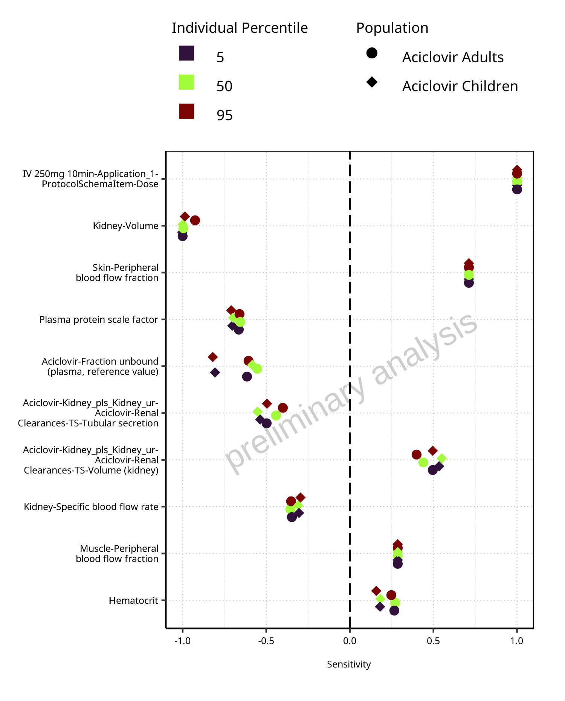
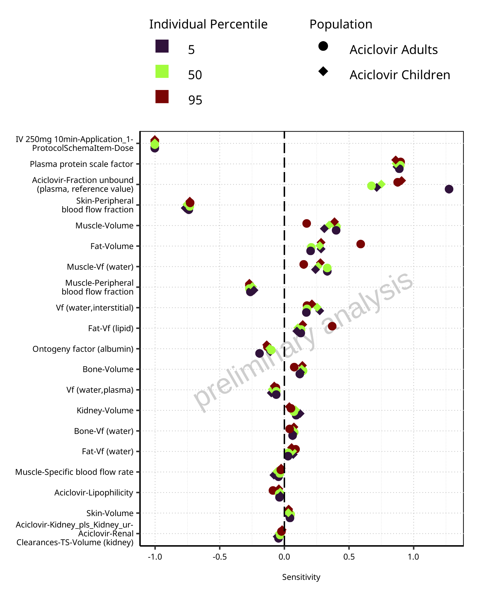
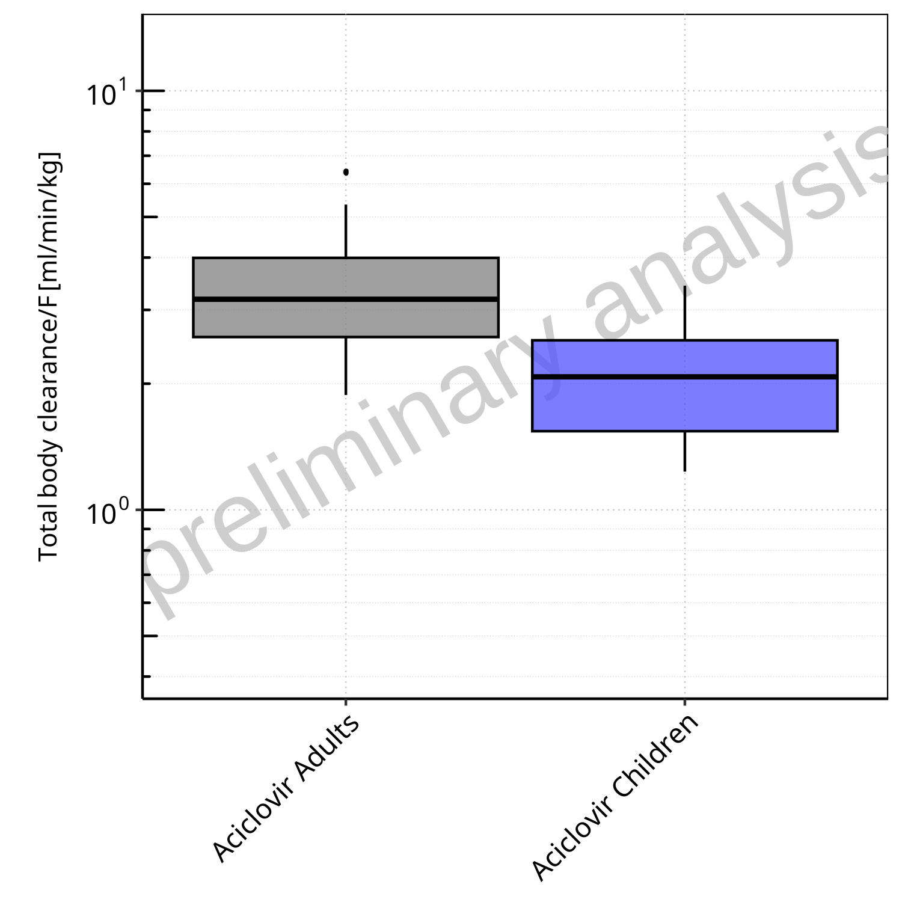
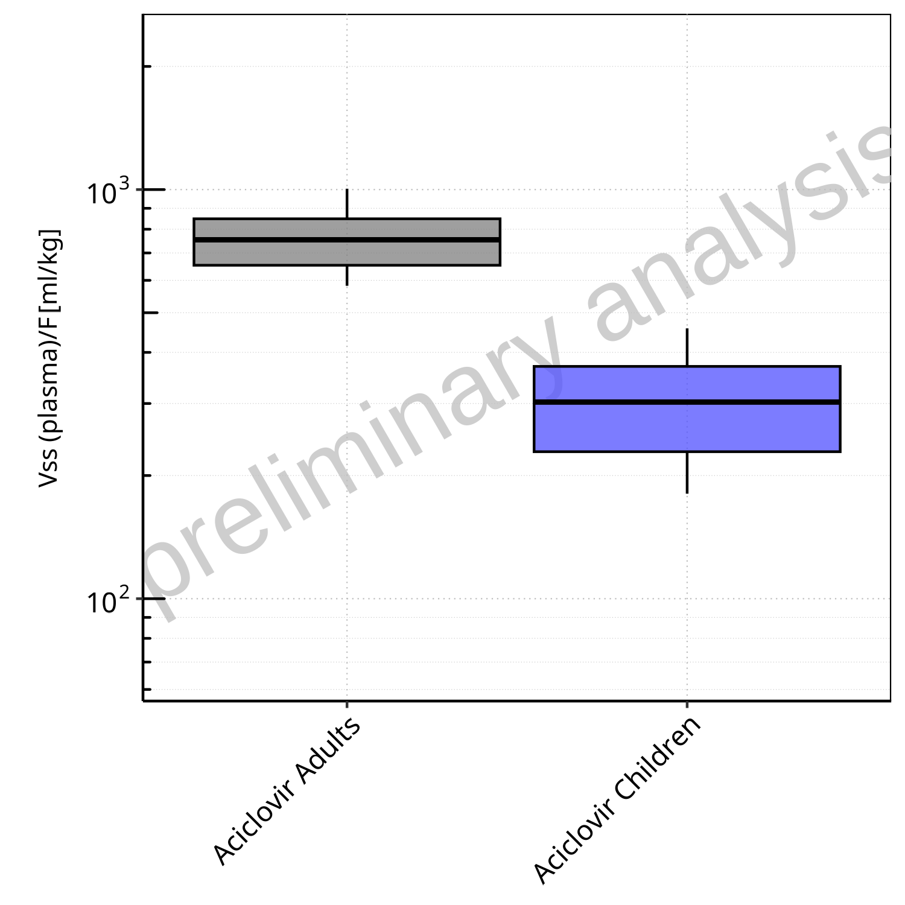
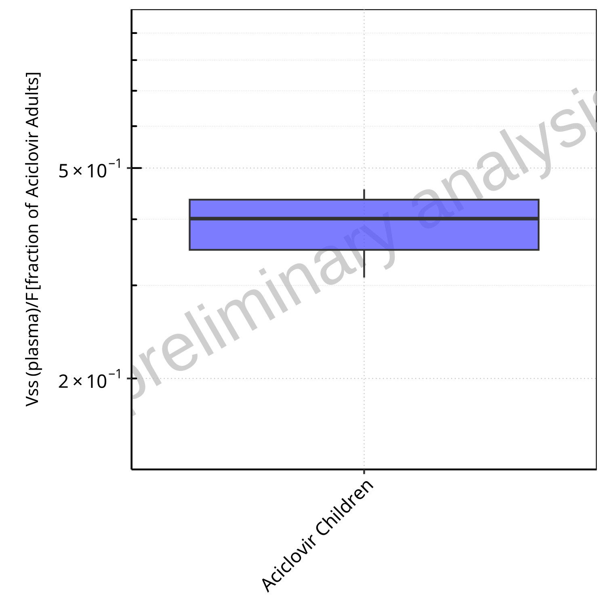
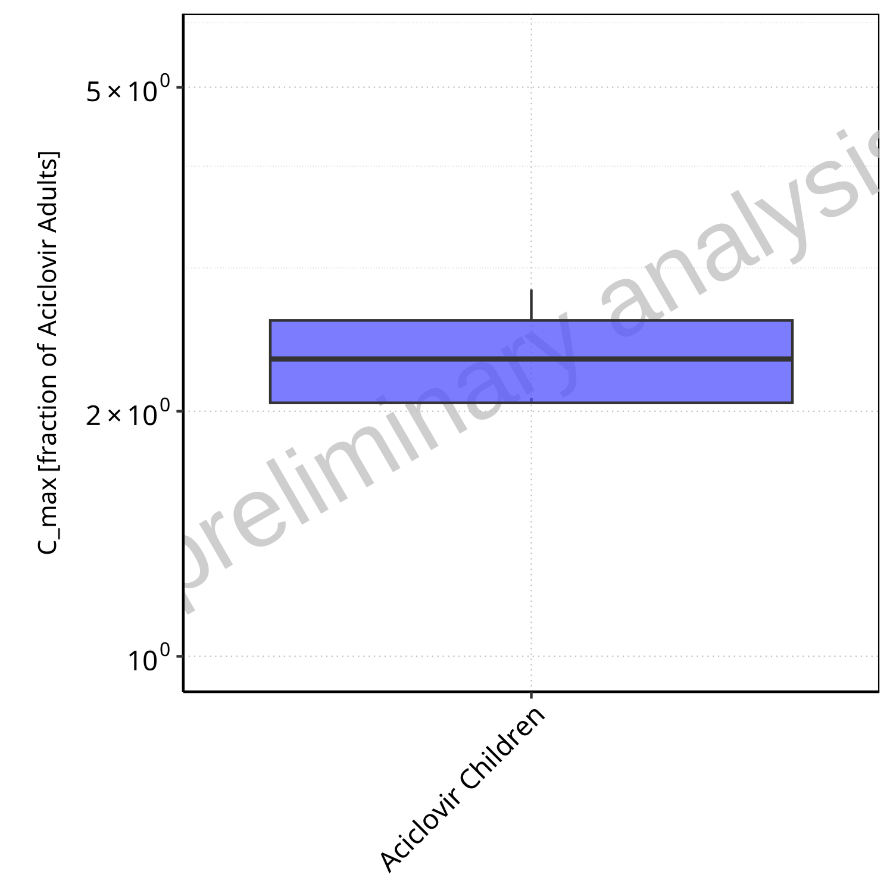
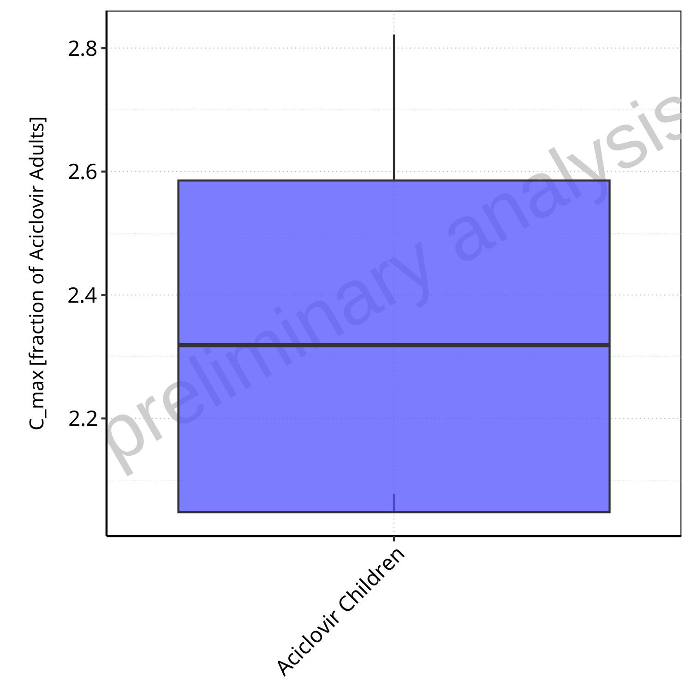

Aciclovir-Population.RmdTable of Contents
1 Sensitivity Analysis

Figure 1-1: Most sensitive parameters for AUC_tEnd of Aciclovir Plasma for individuals at percentiles 5, 50, 95 for Aciclovir Children, Aciclovir Adults.
Figure 1-2: Most sensitive parameters for Total body clearance/F of Aciclovir Plasma for individuals at percentiles 5, 50, 95 for Aciclovir Adults, Aciclovir Children.

Figure 1-3: Most sensitive parameters for Vss (plasma)/F of Aciclovir Plasma for individuals at percentiles 5, 50, 95 for Aciclovir Adults, Aciclovir Children.
Figure 1-4: Most sensitive parameters for C_max of Aciclovir Plasma for individuals at percentiles 5, 50, 95 for Aciclovir Children, Aciclovir Adults.
2 PK parameters
2.1 PK Parameters of Aciclovir Plasma
2.1.1 AUC_tEnd
Figure 2-1: AUC_tEnd of Aciclovir Plasma for Aciclovir Adults, Aciclovir Children shown as box-whisker plot, which indicates the 5th, 25th, 50th, 75th, 95th percentiles in logarithmic scale.

Figure 2-2: AUC_tEnd of Aciclovir Plasma for Aciclovir Adults, Aciclovir Children shown as box-whisker plot, which indicates the 5th, 25th, 50th, 75th, 95th percentiles in linear scale.
Table 2-1: Population statistics summarizing AUC_tEnd of Aciclovir Plasma for Aciclovir Adults, Aciclovir Children reported in [µmol*min/l]
| Population | N | 5th pctl | 25th pctl | 50th pctl | 75th pctl | 95th pctl | Mean | SD | Geo Mean | Geo SD |
|---|---|---|---|---|---|---|---|---|---|---|
| Aciclovir Adults | 100 | 3059.31 | 4093.57 | 5140.20 | 6258.52 | 8520.73 | 5387.42 | 1792.62 | 5117.26 | 1.38 |
| Aciclovir Children | 100 | 4780.92 | 6455.52 | 7889.49 | 10507.43 | 13250.47 | 8594.20 | 2965.27 | 8135.55 | 1.39 |
Figure 2-3: Ratio of population summary statistics of AUC_tEnd of Aciclovir Plasma for Aciclovir Children in comparison to Aciclovir Adults shown as box-whisker plot, which indicates ratios of the 5th, 25th, 50th, 75th, 95th percentiles in logarithmic scale.

Figure 2-4: Ratio of population summary statistics of AUC_tEnd of Aciclovir Plasma for Aciclovir Children in comparison to Aciclovir Adults shown as box-whisker plot, which indicates ratios of the 5th, 25th, 50th, 75th, 95th percentiles in linear scale.
Table 2-2: Ratio of population summary statistics of AUC_tEnd of Aciclovir Plasma for Aciclovir Children in comparison to Aciclovir Adults
| Population | N | 5th pctl | 25th pctl | 50th pctl | 75th pctl | 95th pctl | Mean | SD | Geo Mean | Geo SD |
|---|---|---|---|---|---|---|---|---|---|---|
| Aciclovir Children | 100 | 1.56 | 1.58 | 1.53 | 1.68 | 1.56 | 1.60 | 1.65 | 1.59 | 1.01 |
2.1.2 Total body clearance/F

Figure 2-5: Total body clearance/F of Aciclovir Plasma for Aciclovir Adults, Aciclovir Children shown as box-whisker plot, which indicates the 5th, 25th, 50th, 75th, 95th percentiles in logarithmic scale.
Figure 2-6: Total body clearance/F of Aciclovir Plasma for Aciclovir Adults, Aciclovir Children shown as box-whisker plot, which indicates the 5th, 25th, 50th, 75th, 95th percentiles in linear scale.
Table 2-3: Population statistics summarizing Total body clearance/F of Aciclovir Plasma for Aciclovir Adults, Aciclovir Children reported in [ml/min/kg]
| Population | N | 5th pctl | 25th pctl | 50th pctl | 75th pctl | 95th pctl | Mean | SD | Geo Mean | Geo SD |
|---|---|---|---|---|---|---|---|---|---|---|
| Aciclovir Adults | 100 | 1.88 | 2.58 | 3.18 | 3.99 | 5.35 | 3.34 | 1.09 | 3.17 | 1.39 |
| Aciclovir Children | 100 | 1.23 | 1.54 | 2.08 | 2.54 | 3.43 | 2.12 | 0.68 | 2.01 | 1.39 |
Figure 2-7: Ratio of population summary statistics of Total body clearance/F of Aciclovir Plasma for Aciclovir Children in comparison to Aciclovir Adults shown as box-whisker plot, which indicates ratios of the 5th, 25th, 50th, 75th, 95th percentiles in logarithmic scale.

Figure 2-8: Ratio of population summary statistics of Total body clearance/F of Aciclovir Plasma for Aciclovir Children in comparison to Aciclovir Adults shown as box-whisker plot, which indicates ratios of the 5th, 25th, 50th, 75th, 95th percentiles in linear scale.
Table 2-4: Ratio of population summary statistics of Total body clearance/F of Aciclovir Plasma for Aciclovir Children in comparison to Aciclovir Adults
| Population | N | 5th pctl | 25th pctl | 50th pctl | 75th pctl | 95th pctl | Mean | SD | Geo Mean | Geo SD |
|---|---|---|---|---|---|---|---|---|---|---|
| Aciclovir Children | 100 | 0.66 | 0.60 | 0.65 | 0.64 | 0.64 | 0.63 | 0.62 | 0.63 | 1.00 |
2.1.3 Vss (plasma)/F

Figure 2-9: Vss (plasma)/F of Aciclovir Plasma for Aciclovir Adults, Aciclovir Children shown as box-whisker plot, which indicates the 5th, 25th, 50th, 75th, 95th percentiles in logarithmic scale.

Figure 2-10: Vss (plasma)/F of Aciclovir Plasma for Aciclovir Adults, Aciclovir Children shown as box-whisker plot, which indicates the 5th, 25th, 50th, 75th, 95th percentiles in linear scale.
Table 2-5: Population statistics summarizing Vss (plasma)/F of Aciclovir Plasma for Aciclovir Adults, Aciclovir Children reported in [ml/kg]
| Population | N | 5th pctl | 25th pctl | 50th pctl | 75th pctl | 95th pctl | Mean | SD | Geo Mean | Geo SD |
|---|---|---|---|---|---|---|---|---|---|---|
| Aciclovir Adults | 100 | 581.90 | 653.15 | 753.84 | 848.39 | 1004.80 | 760.07 | 135.65 | 748.29 | 1.19 |
| Aciclovir Children | 100 | 180.58 | 228.71 | 302.41 | 369.64 | 457.91 | 304.05 | 88.39 | 291.30 | 1.35 |

Figure 2-11: Ratio of population summary statistics of Vss (plasma)/F of Aciclovir Plasma for Aciclovir Children in comparison to Aciclovir Adults shown as box-whisker plot, which indicates ratios of the 5th, 25th, 50th, 75th, 95th percentiles in logarithmic scale.

Figure 2-12: Ratio of population summary statistics of Vss (plasma)/F of Aciclovir Plasma for Aciclovir Children in comparison to Aciclovir Adults shown as box-whisker plot, which indicates ratios of the 5th, 25th, 50th, 75th, 95th percentiles in linear scale.
Table 2-6: Ratio of population summary statistics of Vss (plasma)/F of Aciclovir Plasma for Aciclovir Children in comparison to Aciclovir Adults
| Population | N | 5th pctl | 25th pctl | 50th pctl | 75th pctl | 95th pctl | Mean | SD | Geo Mean | Geo SD |
|---|---|---|---|---|---|---|---|---|---|---|
| Aciclovir Children | 100 | 0.31 | 0.35 | 0.40 | 0.44 | 0.46 | 0.40 | 0.65 | 0.39 | 1.13 |
2.1.4 C_max
Figure 2-13: C_max of Aciclovir Plasma for Aciclovir Adults, Aciclovir Children shown as box-whisker plot, which indicates the 5th, 25th, 50th, 75th, 95th percentiles in logarithmic scale.
Figure 2-14: C_max of Aciclovir Plasma for Aciclovir Adults, Aciclovir Children shown as box-whisker plot, which indicates the 5th, 25th, 50th, 75th, 95th percentiles in linear scale.
Table 2-7: Population statistics summarizing C_max of Aciclovir Plasma for Aciclovir Adults, Aciclovir Children reported in [µmol/l]
| Population | N | 5th pctl | 25th pctl | 50th pctl | 75th pctl | 95th pctl | Mean | SD | Geo Mean | Geo SD |
|---|---|---|---|---|---|---|---|---|---|---|
| Aciclovir Adults | 100 | 41.99 | 48.73 | 52.90 | 59.91 | 67.16 | 54.30 | 8.02 | 53.72 | 1.16 |
| Aciclovir Children | 100 | 87.24 | 99.81 | 122.66 | 154.90 | 189.55 | 130.01 | 34.15 | 125.82 | 1.29 |

Figure 2-15: Ratio of population summary statistics of C_max of Aciclovir Plasma for Aciclovir Children in comparison to Aciclovir Adults shown as box-whisker plot, which indicates ratios of the 5th, 25th, 50th, 75th, 95th percentiles in logarithmic scale.

Figure 2-16: Ratio of population summary statistics of C_max of Aciclovir Plasma for Aciclovir Children in comparison to Aciclovir Adults shown as box-whisker plot, which indicates ratios of the 5th, 25th, 50th, 75th, 95th percentiles in linear scale.
Table 2-8: Ratio of population summary statistics of C_max of Aciclovir Plasma for Aciclovir Children in comparison to Aciclovir Adults
| Population | N | 5th pctl | 25th pctl | 50th pctl | 75th pctl | 95th pctl | Mean | SD | Geo Mean | Geo SD |
|---|---|---|---|---|---|---|---|---|---|---|
| Aciclovir Children | 100 | 2.08 | 2.05 | 2.32 | 2.59 | 2.82 | 2.39 | 4.26 | 2.34 | 1.11 |